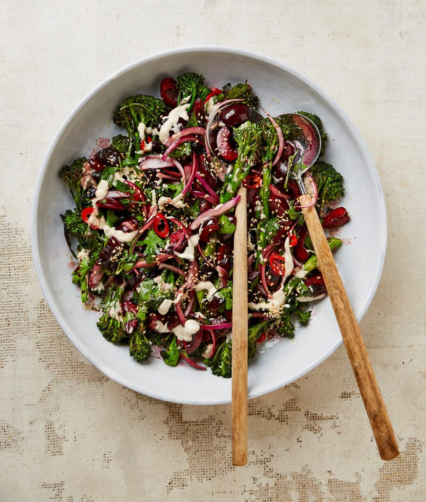

Roast Tenderstem broccoli with cherry and ancho ezme

Ezme is a spicy condiment from Turkey that pairs perfectly with grilled meats. The rich sweetness of in-season cherries pairs brilliantly with the bitter heat of ancho chillies in this untraditional twist.
For the cherry molasses
Start by making the cherry molasses. Put half the cherries, the vinegar, sugar, ancho chilli and three tablespoons of water in a small saucepan. Put on a medium-high heat and bring to a boil. Turn down to a medium heat and simmer for 10-15 minutes, until the cherries are glossy and soft and the liquid has reduced to a syrup. Tip into a medium bowl and leave to cool completely.
Meanwhile, in a small bowl, mix the tahini, half a tablespoon of lemon juice, 50ml water and an eighth of a teaspoon of salt until smooth, then set aside. Turn the oven grill to its grill setting and put an oven-safe griddle pan or roasting tray on the top shelf. Trim the broccoli, discard the woody bits, then toss in a bowl with the red chilli, a tablespoon of oil and a quarter-teaspoon of salt. Carefully place on the griddle pan and grill for two minutes on each side, until lightly charred and slightly softened.
Meanwhile, remove the ancho chilli from the cherries, finely chop and return to the bowl with the remaining cherries and oil, red onion, herbs and a quarter-teaspoon of salt. Mix well.
Arrange the broccoli in the centre of a large plate, drizzle the tahini all over, then spoon the ezme on top. Sprinkle with the sesame seeds and serve.